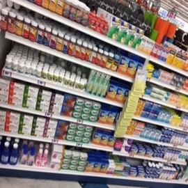
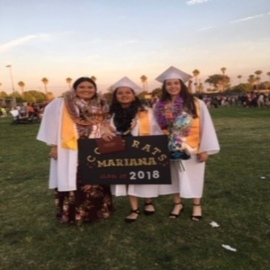
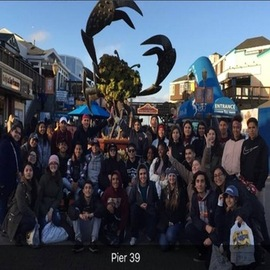
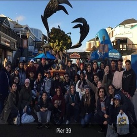
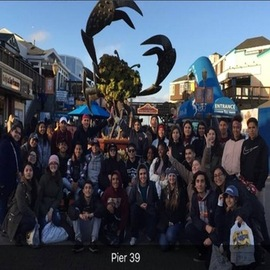

Jacqueline Hernandez
I am a second year college student at UC Riverside, and I am currently a Pre-Business major. My aim is to stay an extra year after graduating and go to graduate school to get my teaching credentials and teach at an elementary or high school level. The classes that I enjoyed taking my first year were Math 22, which was Calculus for Business, and Economics 3, which was Macroeconomics. I plan on taking more Computer Science courses here at UC Riverside because learning about the hardware and software of computers is interesting to me. In the next couple of years, I plan to focus on finishing my career, and I hope to meet more new people and make new friends as well. I have some volunteer experience from an after school program where I helped organize educational events, I helped students complete their homework assignments or projects, and I learned how to assist teachers in their classrooms. During the years that I have left here at UC Riverside, I hope to learn many new skills and methods that can help me develop new ideas in the future.
I was born in Bellflower, CA, but I lived in Mexico for about twelve or thirteen years before moving back to the United States. During my time in Mexico, I attended two different schools and learned many different well known subjects, such as, Computer Science, English, and Math. I attended a year of middle school at a Technical school, and I was enrolled in the technological/STEM branch of that school. I am proficient in both English and Spanish, and in high school I studied 2 years of French. I am interested in taking more university level French courses so that I can challenge myself to learn more of the language and maybe become somewhat proficient in it. In high school, I was also part of an AVID club where we formed groups and help each other understand concepts that were taught in our classes, we volunteered to set up club organizations on campus, and we learned about all the different benefits that incoming college students could apply for, such as financial aid, pell grants, scholarships, and loans.
During my free time, I like to watch movies, listen to music, and hang out with my friends and family. I enjoy browsing through social media to inform myself about recent news around the world, as well as to have a better understanding of the world culturally. During my free time, I also enjoy visiting new restaurants and trying a variety of different new foods. One of my hobbies is traveling; I like to visit new places around the world and even explore different parts around my city in look of new adventures. Another one of my hobbies is drawing and coloring because I like to sketch anything that comes to mind or I get ideas of the internet, and then I add color to the drawings. I have always enjoyed learning new skills and methods to solve problems and to have a more broad understanding of topics discussed globally.
Experience
Cashier/Fronter
• Responisible for checking out customers at the register
• Organized merchandise by categorires on shelves
• Assisted managers with cash outs
AVID Tutor
• Assisted students with their homework assignments
• Reviewed and graded student projects and gave feedback
After School Coordinator
• Assisted teachers with lessons in the classroom
• Helped students complete their homework and projects
• Created educational content to help students have a better understanding
• Organized educational after school events
Education
University of California Riverside
Portfolio


 

